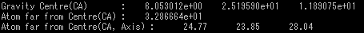

pdbInfoでみた入力ファイルの詳細

※オプション必須項目のみの場合の出力結果は入力ファイルと変わらない
| オプション | 必須項目/選択項目 | 説明 | デフォルト |
|---|---|---|---|
| -i | 必須 | 入力ファイル設定 | NULL |
| -o | 必須 | 出力ファイル設定 | NULL |
| -EA | 選択 | オイラー角を設定 | モード 0.0 0.0 0.0 |
| -h | 選択 | ヘルプを表示 |
| 一桁目： | どの軸から回転を始めるか設定 |
| 二桁目： | 回転軸の順番を設定１ |
| O…Z→Y→Xの順に回転軸を変更する E…Z→X→Yの順に回転軸を変更する |
|
| 三桁目： | 回転軸の順番の設定２ |
| Y…順番を維持する N…順番を逆順にする |
|
| 四桁目： | 回転方法を設定 |
| Y…物体そのものをまわす D…座標を移動させる |
行列ファイルの詳細 |
出力結果画像 ーーーーーー＞ |
 |
行列ファイルの詳細 |
出力結果画像 ーーーーーー＞ |
 |
行列ファイルの詳細 |
出力結果画像 ーーーーーー＞ |
 |
横からみた様子  |